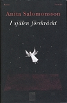
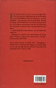

Johanna Viktoria Nygren
Folkskolelärare 1912, konstnär och diktare i Norsjö fs, Norsjö sn. Blev 80 år.
| Född: | 1885-01-03 Norrby 1, Norsjö fs, Norsjö sn. [1] | |
|---|
| Utflyttad till: | 1912-02-01 Torsåkers fs, Gävleborgs län. [2] | Folkskolelärare. |
|---|
| Levde: | 1913 Norrby 1, Norsjö fs, Norsjö sn. [3] | Småskolelärare. |
|---|
| Levde: | 1928 Norrby 1, Norsjö fs, Norsjö sn. [4] | Småskolelärare. |
|---|
| Död: | 1965-11-10 Norrby 1:6, Norsjö fs, Norsjö sn. [5] | Ogift kvinna. |
|---|
Noteringar
Viktoria Nygren 1885-1965. Född i Norrby, Norsjö socken. Bodde hela sitt liv i Norsjö.
Småskollärarinna, målarinna och även diktare.
En av de som tog intryck av de här pionjärerna - Oscar Halleborg, Hildur Halleborg f.Bask och Johan Mauritz Lindqvist - när det gäller konst i Norsjö, var den konstnär som sedan blev bygdens kanske mest namnkunniga, Viktoria Nygren. Hon föddes 1885 i Norrby utanför Norsjö och arbetade som småskolelärare fram till 1935, då hon slutade på grund av sjukdom. Under hela sin tid som lärare hade hon teckning som hobby och hon umgicks flitigt med paret Halleborg och Mauritz Lindqvist. Men det var först 1944, när Viktoria var 60 år gammal, som hon debuterade som konstnär. Debututställningen, uppmuntrad av Martin Åberg och Gustaf Näsström, ägde rum i Umeå och blev en stor succé och alla hennes tavlor såldes. Victoria Nygren hade två samlingsutställningar i Stockholm 1948-49 och efter dessa var hon ett av de stora namnen i svensk naiv konst. Viktora Nygren var autodidakt och tillhörde den grupp konstnärer som kallas för "naiver". Hon målade länge i avskildhet.
Hela Victoria Nygrens konstnärsskap är sammanvävt med en intensiv religiös känsla. Hon gav bild åt sina egna drömmar och visioner, ofta med Uppenbarelseboken i Bibeln som källa.
"Träden kan inte vara gröna i himlen", lär Viktoria Nygren ha svarat på en fråga om varför hon målade röda träd. Det himmelska var för henne lika viktigt som det jordiska. Himlavisionerna samsades i hennes måleri med porträtt och landskap.
Berta Hansson, också hon folkskollärare och konstnär med egna erfarenheter från Västerbotten, var en av många som såg Viktoria Nygrens kvaliteter. I julnumret 1966 av tidningen Vi beskriver hon lyriskt en duk med foreller och rödingar: "De ägde det slags öververklighet som bara en äkta naivist kan skapa i ögonblick av stor förälskelse inför motivet".
En av hennes märkligaste religiösa tavlor är "Kristi Eld", som finns i Norsjö församlingshem. Hon arbetade med denna tavla i fyra år. En annan uppmärksammad tavla är "Änglarna vid Sveriges gräns", som utvisar hur Sverige genom "änglarnas beskydd" undgick det senaste världskriget.
När Anita Salomonsson sökte bilder på änglar under arbetet med sin debutroman "Änglabilder" (1994) kom hon Viktoria Nygrens arbeten på spåren. En tid senare fick hon också tillgång till brev och opublicerade texter. Anita Salomonsson blev fast. Här fanns ett unikt människoöde och stoffet till en ny roman låg framför henne. Den kom att få titeln "I själen förskräckt" (2000).
- Viktoria Nygren var en orolig själ som längtade efter mening och struktur i tillvaron. Hon skildrade ofta religiösa uppenbarelser i sina målningar, säger Anita Salomonsson.
- Sorgligt nog var hon ett offer för föreställningen att kvinnors plats var i hemmet. För att hon målade tavlor fick hon utstå mycket smädelse medan hon levde.
Hon har deltagit i ett flertal samlingsutställningar och även haft separata utställningar och är representerad på Västerbottens museum, i Skellefteå konsthall och i Norsjö Museum. I Fannygården på Norsjös hembygdsområde finns ett rum tillägnat henne..
Viktoria Nygren utgav 1963 diktsamlingen "Mitt livs sånger".
libris.kb.se/bib/2104282
Personhistoria
| Årtal | Ålder | Händelse |
|---|
| 1885 |
|
Födelse 1885-01-03 Norrby 1, Norsjö fs, Norsjö sn [1] |
| 1887 |
2 år |
Systern Jenny Margreta Nygren föds 1887-08-24 Norrby 1, Norsjö fs, Norsjö sn [6] |
| 1890 |
5 år |
Systern Hulda Emerentia Nygren föds 1890-08-18 Norrby 1, Norsjö fs, Norsjö sn [6] |
| 1893 |
8 år |
Brodern Sten Harald Nygren föds 1893-09-07 Norrby 1, Norsjö fs, Norsjö sn [7] |
| 1896 |
11 år |
Systern Nanny Petronella Nygren föds 1896-09-28 Norrby 1, Norsjö fs, Norsjö sn [7] |
| 1898 |
13 år |
Systern Nanny Petronella Nygren dör 1898-04-28 Norrby 1, Norsjö fs, Norsjö sn [8] |
| 1899 |
14 år |
Systern Fanny Medora Nygren föds 1899-05-29 Norrby 1, Norsjö fs, Norsjö sn [7] |
| 1901 |
16 år |
Brodern Sven Edvard Nygren föds 1901-08-29 Norrby 1, Norsjö fs, Norsjö sn [2] |
| 1902 |
17 år |
Systern Fanny Medora Nygren dör 1902-03-21 Norrby 1, Norsjö fs, Norsjö sn |
| 1904 |
19 år |
Brodern Paul Bertil Nygren föds 1904-01-25 Norrby 1, Norsjö fs, Norsjö sn [2] |
| 1906 |
21 år |
Fadern Per Edvard Nygren dör 1906-01-09 Norrby 1, Norsjö fs, Norsjö sn [9] |
| 1912 |
27 år |
Utflyttad till 1912-02-01 Torsåkers fs, Gävleborgs län [2] |
| 1913 |
|
Levde 1913 Norrby 1, Norsjö fs, Norsjö sn [3] |
| 1928 |
|
Levde 1928 Norrby 1, Norsjö fs, Norsjö sn [4] |
| 1931 |
46 år |
Modern Milda Margreta Persdotter dör 1931-01-26 Norrby 1, Norsjö fs, Norsjö sn [10] |
| 1951 |
66 år |
Systern Jenny Margreta Nygren dör 1951-12-07 Gräsmyr 5:56, Nordmalings kbfd, Nordmalings sn [11] |
| 1965 |
80 år |
Död 1965-11-10 Norrby 1:6, Norsjö fs, Norsjö sn [5] |
Dokument
Källor
| [1] | Norsjö C:4 (1879-1894) fol. 34, AI:8 (1881-1891) fol. 83 |
| |
| | |
| [2] | Norsjö AIIA:1 (1900-1912) fol. 202 |
| |
| | |
| [3] | Norsjö AIIA:5 (1912-1928) fol. 193 |
| |
| | |
| [4] | Norsjö AIIA:5 (1912-1928) fol. 1931928 |
| |
| | |
| [5] | DB, FS / DOR 65 |
| |
| | |
| [6] | Norsjö AI:8 (1881-1891) fol. 83 |
| |
| | |
| [7] | Norsjö AI:9 (1892-1900) fol. 98 |
| |
| | |
| [8] | Norsjö F:4 (1895-1919) 40/1898 fol. 25, AI:9 (1892-1900) fol. 98 |
| |
| | |
| [9] | Norsjö F:4 (1895-1919) 4/1906, AIIA:1 (1900-1912) fol. 202 |
| |
| | |
| [10] | SCB Döda AC Norsjö 7/1931 |
| |
| | |
| [11] | AL, DA / DOR 50-51 |
| |
|
|
Konstnär: Victoria Nygren, Norsjö
Källa:
www.norsjo.se/default.aspx?id=19790
|
| |
|  |
2000. Anita Salomonssons bok, som handlar om Viktoria Nygren i Norrby, Norsjö sn.
"I själen förskräckt", 2000
Norstedts förlag
Omslag: Linn Fleisher
411 sidor
ISBN 91-1-300841-2
|
| |
|  |
2000. Anita Salomonssons bok, som handlar om Viktoria Nygren i Norrby, Norsjö sn.
"I själen förskräckt", 2000
Norstedts förlag
Omslag: Linn Fleisher
411 sidor
ISBN 91-1-300841-2
|
|
{kind=link}
{kind=link}
{kind=link}